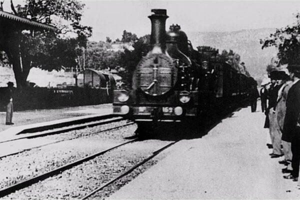
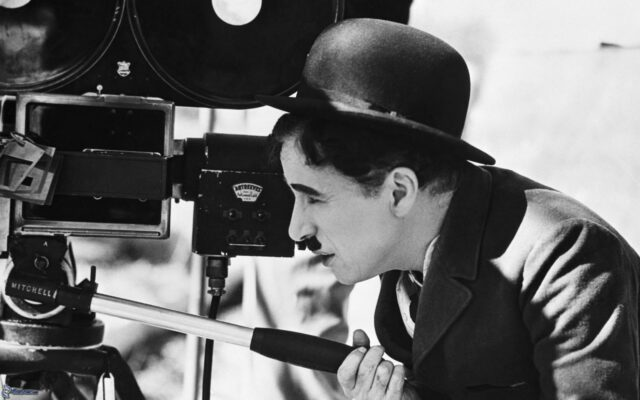

O Surgimento da Magia em Movimento

O final do século XIX foi marcado por uma efervescência de experimentações científicas e tecnológicas. Foi nesse contexto que visionários como os irmãos Lumière e Thomas Edison começaram a explorar a captura e a projeção de imagens em movimento. Em 1895, os irmãos Lumière apresentaram ao mundo o Cinematógrafo, um aparelho capaz de projetar curtas-metragens em locais públicos. Esse momento emblemático marcou o início oficial da sétima arte, e as primeiras projeções públicas rapidamente conquistaram a imaginação do público.
À medida que a novidade se espalhava, surgiam cineastas pioneiros que experimentavam com a narrativa visual. Georges Méliès, por exemplo, ficou conhecido por seus truques de ilusionismo e efeitos especiais em filmes como “A Viagem à Lua” (1902). A linguagem do cinema estava apenas começando a ser explorada, e as possibilidades pareciam infinitas.
Silêncio que Fala: A Era do Cinema Sem Som sincronizado

Na primeira década do século XX, o cinema ainda era uma forma de arte essencialmente visual. Os filmes eram acompanhados por músicos ao vivo ou trilhas sonoras executadas em sincronia. Este período, conhecido popularmente como a Era do Cinema Mudo, testemunhou a ascensão de cineastas como D.W. Griffith, cujo épico “O Nascimento de uma Nação” (1915) revolucionou a narrativa cinematográfica.
O cinema mudo também viu o surgimento de grandes comediantes, como Charlie Chaplin e Buster Keaton, que dominaram as telas com sua habilidade física e timing cômico. Títulos icônicos como “Tempos Modernos” (1936) e “O General” (1926) continuam a ser admirados até hoje, mostrando como o silêncio pode ser uma linguagem universal e poderosa na sétima arte.